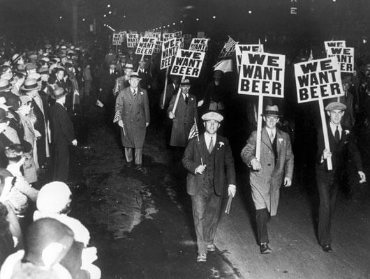

History
The history of craft brewing saw America’s brewing landscape start to change by the late-1970s. The traditions and styles brought over by immigrants from all over the world were disappearing. Only light lager appeared on shelves and in bars, and imported beer was not a significant player in the marketplace. Highly effective marketing campaigns had changed America’s beer preference to light-adjunct lager. Low calorie light lager beers soon began driving and shaping the growth and nature of the American beer industry, even to present day. By the end of the decade, the beer industry had consolidated to only 44 brewing companies. Industry experts predicted that soon there would only be five brewing companies in the United States.
Defining Moments in Craft Beer

Protesters want legalized homebrewing.
- 1972: CASCADE HOPS ARE MADE AVAILABLE
- Cascade hops were released from a government breeding program in 1972 and have since become one of the most popular hop varieties in craft beer. They produce floral, slightly bitter beers with citrus notes as well. Cascade hops have become one of the most recognizable hops in craft beer. Today, hop innovation is a big business, but Cascade lives on as a classic.
- 1978: JIMMY CARTER FEDERALLY LEGALIZES HOMEBREWING
- With Prohibition came the ban on homebrewing. Yet even after Prohibition ended, there was still a federal law on the books that banned homebrewers from innovating on their own. President Carter changed that (although the last state laws against homebrewing in Alabama and Mississippi weren’t reversed until 2013), and now even a president has joined the homebrew movement. With an average of one new brewery a week opening, the need for qualified brewers who start their craft at home has never been greater.
- 1995: GOOSE ISLAND BOURBON COUNTY BRAND STOUT IS THE FIRST WHISKEY BARREL-AGED BEER
- Gregory Hall, who used to be the brewmaster at Goose Island, brought his Bourbon County Brand Stout to the Great American Beer Festival and put it under the Imperial Stout category. It was disqualified for being too strong. Today is seems like every big-time craft brewery has its own barrel aging program.
- 2011: LEFT HAND BREWING BOTTLES THE FIRST CRAFT NITRO BEER
- Guinness is the most well known nitro beer, and it has a long distinctive history of proper pouring and a distinct taste. But in 2011, Left Hand Brewing entered the nitro scene by spending hundreds of thousands of dollars on their own nitro beer. Left Hand Milk Stout Nitro took off as America’s stout as it declared independence from imported stouts.
Interested In Craft Beer?
Here’s your chance to learn from industry experts in one of the finest destinations on earth, and the U.S. Capital of Craft Beer — San Diego, California. Now in its third year, Craft Beer Education Camp gives craft beer aficionados around the world the opportunity to experience a nine-day version of SDSU’s popular Business of Craft Beer program. Learn More.